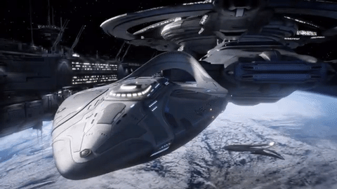

Teléfono: 745 10 25 63
Tenemos varios planetas que al visitarlos nunca más podrá olvidarlos en su vida. Mercurio, Marte, los anillos de Venus. Podrá viajar en una nave y observar lo que siempre soñó, pisar otros mundos. Prometemos que se quedará sorprendido y nunca se lamentará de su decisión. Tenemos las siguientes opciones:
Si prefiere estar en una nave espacial espectacular, con piscinas, restaurantes, pista de basket, discotecas, sala de pádel, gimnasio y muchas sorpresas... Todo con paredes de cristal para ver toda la galaxia. Camas súper cómodas con vista al universo donde podrá ver estrellas, galaxias, asteroides... Todas las ventanas tienen un cristal tintado, que se puede seleccionar para oscurecer el cristal por si la luz no le deja dormir. Contrate un masaje y disfrute de las vistas mientras su cuerpo absorbe la energía del masaje y de la galaxia.
Realice un tratamiento antiedad junto a los anillos de Jupiter. Las cabinas sensoriales para relajarse, jacuzzix, piscina con agua del mar Muerto. Agua con una gran cantidad de sal que hace muy difícil hundirse y permite dormir sobre el agua para relajarse. Nuestra esperiencia sensorial, es única y hace que todos los tratamientos tengan una mayor efectividad. Masaje con piedras calientes de otros planetas, masajes de lodo y arcilla. Shiatsu, Reiky, acupuntura ... consulte todos nuestros tratamientos.
Continúe sus ejercios en nuestro enorme gimnasio de 2.000 metros cuadrados: sala de spinning, sala de cardio con la últimas maquinas. Cinta de correr con regulación de gravedad, remo, stepers, bicicletas de cardio... Sala de cardioboxing con sacos en forma de marcianos. Salas para hacer aerobic espacial, yoga, pilates y cientos de actividades.
El agua en nuestros Cruceros Imperiales es muy importante. Piscina relax, piscina de olas, piscina para los más peques y nuestra gran piscina olimpica, donde puede nadar con las paredes acristaladas. Puede nadar y tumbarse en el agua disfrutando de todo el universo a su alrededor. Las paredes están todas acristaladas y el fondo de la piscina también es de cristal. Va a tener la sensación de estár nadando en el espacio. Se complementa con varias piscinas más pequeñas ubicadas por el Crucero. Se complementa con jacuzzis, piscinas con chorros de agua, realizaran presotera aliviando dolores musculares. Nuestro Spa es uno de los mejores con la colaboración de La Roche-Posay, su personal le asesorará en los mejores tratamientos faciales y corporales.
Si realmente eres diferente y te gusta lo innovador, lo más moderno y tener un recuerdo único de tu boda celebra tu boda con nostoros.Tenemos varias opciones: mínimo de estancia de 2 días y máximo una semana. Tu boda será única, tus invitados se quedarán sin palabras. Una nave espacial para usted y sus invitados con todas las comodidades que siempre ha deseado.
Salas de cine para los más pequeños y para los mayores. Piscina para hacer una buena Pool Party. Fiesta de espuma, discoteca 24 horas con la mejor musica dance, pop, hiphop, clasicos, breakbeat, Brostep, Electro House, Grime... Grabaciones y fotos con drones insecto que no les molestarán en ningún momento. Sala antigravedad en la cual podrán flotar con sus invitados.
¿Lo mejor? Toda la comida y pasteleria está preparada por esquisitos cocineros de estrellas Michelín, los cuales pondrán diferentes entrantes y platos para que usted haga un menú personal. Y la sorpresa mayúscula para el final: Imagine una enorme sala acristalada en la que se ve toda la galaxia, y frente a una enorme vista un enorme pastel se mantiene flotando, esperando que usted y su pareja inicien el brindis y hagan el corte. Nunca podrá olvidar las sensaciones de su día más especial. No se preocupe por el vestido o el traje, nuestros modistas se encargarán y además contamos con una petzone para animales de compañia, en caso de que no quiera que su animal de compañia se pierda ese día tan maravilloso. En ella cuidarán a su mascota, o a la de sus invitados.
Decir Galaxia es decir colores, sensaciones, movimientos espectaculares. Es decir un ballet de estrellas, satélites, planetas, masas de gas, etc...Puede realizar con nosotros un viaje íntimo de mínimo dos personas y máximo seis, en una nave personal y más intima. Las habitaciones son tipo suite con baño privado, ducha y bañera. Cama king size, minibar y jacuzzis
Sorprenda a sus seres queridos con el mejor viaje. Nuestros clientes aseguran que nunca han podido olvidar la primera vez, ya que todos repiten. Trabajamos para ofrecer las mejores experiencias para usted y familiares y amigos.
Cada viaje es diferente y único. Podrá inmortalizar el viaje con grabaciones de video, gracias a las camaras exteriores de la nave o con sus móviles y cámaras profesionales de fotos que nosotros le ofrecemos para el viaje, para que el último día se pueda descargar las que desee en un pen drive o en su nube.